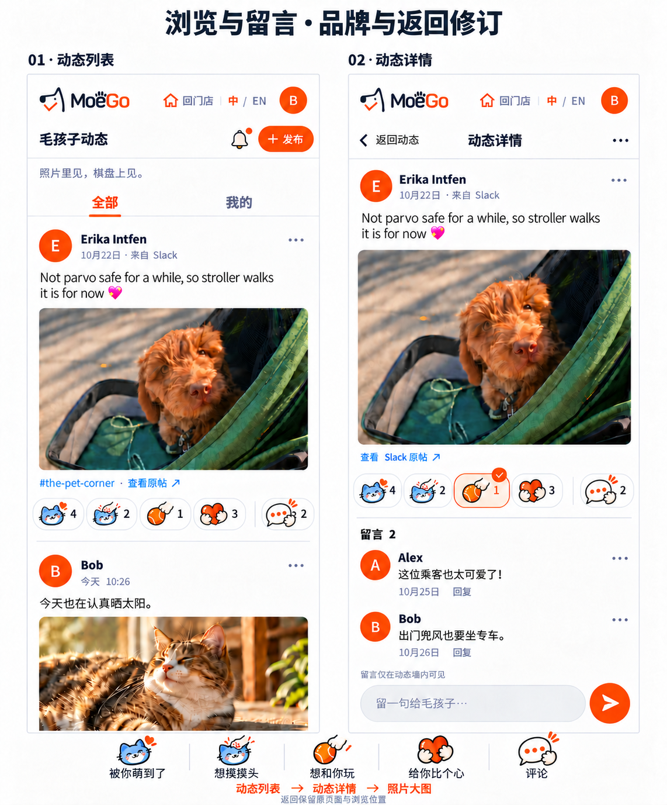
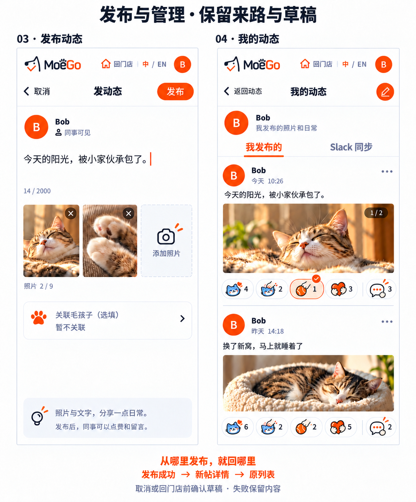
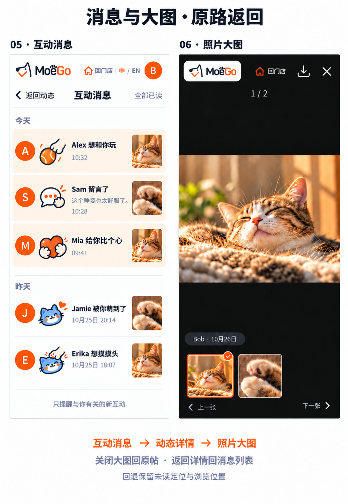

01 · 动态列表 / 动态详情
放大原图 ↗顶部保留全局“回门店”。列表的照片和正文是主角，四种互动与评论紧随其后；详情沿用同一张帖子卡，并加入留言列表和固定输入栏。

详情图中显示“返回动态”；从消息或我的动态进入时，返回文案随来路变化。图中数量与新留言为示例。
02 · 发布动态 / 我的动态
放大原图 ↗发布页复用照片选择与可选宠物关联。发布成功进入新帖详情，返回时回到原入口；取消、浏览器返回或点顶部“回门店”，都先检查未发布的改动。我的动态复用帖子卡，只增加来源切换。

03 · 互动消息 / 照片大图
放大原图 ↗消息页复用同一组互动图标，点击后打开对应动态或定位留言。大图页保留左上角标识和顶部“回门店”，关闭 X 则恢复原页面、图片与浏览位置。

大图可由列表或详情直接打开，关闭后回到打开它的页面；“回门店”是独立的全局操作。
04 · 图标与组件
评论图标原图 ↗四个快捷图标沿用已选定的“宠物小动作”原稿；评论图标直接使用本次上传的原图：奶油白对话气泡、橙色三点、抱住边缘的小爪。评论始终在最右侧，不与快捷互动混在一起。
快捷互动栏 · 原图组件预览
顺序固定。页面内以图标加计数显示，完整语义用于按钮名称与提示；下方文字是评审图例。这里使用四枚原图的逐字节副本，不重绘既有图标。
前四项是对当前动态的互动；评论按钮负责进入或定位留言。图中的单个选中态仅示范外观，本轮未扩展或确定互斥、多选、次数等新规则，也不改变宠物爪印簿的原有规则。
| 组件 | 复用 / 扩展 | 本版设计职责 |
|---|---|---|
| 品牌栏 | 复用现有 BrandHeader 的品牌与顶部操作结构，收拢社交页头 | 固定 MoeGo 左上角；“回门店”、语言和头像放右侧；暗色大图保留原标识浅色衬底。 |
| 页面导航栏 | 扩展 SocialHeader 的上下文导航 | 返回文字随来源改变，右侧按页面提供发布、更多或全部已读。 |
| 动态卡片 | 复用 SocialPostCard、Avatar 和图片布局 | 列表、详情、我的动态共享作者、正文、照片、来源与管理入口。 |
| 快捷互动栏 | 扩展 SocialReactions；复用四枚图标原稿 | 四个固定语义与各自计数；评论单独位于最右侧。中英文名称由文案提供。 |
| 评论图标 | 已确认使用上传原图，尚未接入图标库 | 沿用宠物小动作的描边、颜色与爪部造型；后续经统一 Icon 使用。 |
| 留言与发布 | 复用 SocialComments、SocialCommentInput、SocialComposer | 一层回复、可取消回复对象、照片编辑、上传状态与草稿保护。 |
| 图片查看器 / 消息 | 复用 SocialPhotoViewer、SocialActivity | 保留原图比例和当前索引；消息打开对应帖子，返回恢复消息列表位置。 |
| 弹层与状态 | 复用 Sheet、Button、Toast、SocialEmpty | 放弃草稿、删除、本站隐藏、问题反馈；加载、空、失败、已移除。 |
离开有改动的发布页
“这条动态还没发布，要先离开吗？”
继续编辑
放弃并离开
取消 / 回门店 / 系统返回，共用同一确认。放弃后前往原本点击的目标。
删除自己的站内动态
“照片和本站留言会一起移除，删除后无法恢复。”
删除动态
保留动态
确认成功后回到来路列表；失败留在当前弹层并可重试。
隐藏 Slack 同步动态
“只从动态墙隐藏，Slack 原帖保留。”
从动态墙隐藏
取消
隐藏与删除用明确的不同文案；其他人的动态保留反馈入口。
上述为静态组件示意。加载用骨架；失败留重试；空态保留发布入口；已移除状态保留返回入口，不继续显示旧照片预览。
05 · 跳转与回退规则
设计说明 ↗“返回上一页”和“回门店”分开：前者恢复来路，后者直接回游戏首页。浏览器 / 系统返回与页面返回保持一致，弹层先关闭弹层。
逐级回退：大图 → 原页面 → 原列表位置。点列表照片也可直接开大图。
详情显示“返回消息”，回去保留原消息位置；不统一跳回动态首页。
来源页签、原浏览位置继续保留，新帖子及时可见；从动态列表发布则返回动态列表。
| 当前位置 / 操作 | 目标 | 恢复内容 |
|---|---|---|
| 详情 · 返回 | 打开详情的动态列表、我的动态或消息页 | 原页签、筛选、滚动位置；从消息进入时定位对应留言。 |
| 大图 · X / 系统返回 | 打开大图的原页面 | 帖子、原图片位置和浏览位置；不额外制造详情页。 |
| 发布 · 取消 / 返回 | 空草稿直接返回；有改动先确认 | 继续编辑保留全部输入；上传或发布失败不清空。 |
| 任意页 · 顶部回门店 | 游戏首页 | 发布页的未提交改动先走同一草稿确认。 |
| 弹层 · 取消 / 关闭 | 原页面 | 恢复触发按钮焦点与浏览位置；不额外跳一页。 |
| 直接打开深链接 | 默认返回动态列表；未登录先用现有 PIN 登录 | 登录完成回到原目标；不再新增独立 Slack 登录页。 |
| 原帖已移除 | 显示通用移除态，可返回来路；无来路回动态列表 | 不展示过期照片、正文和敏感通知预览。 |
| 查看 Slack 原帖 | 在外部标签 / Slack 打开 | 站内当前页面与位置保留；站内内容不写回 Slack。 |
设计范围：照片、文字、四种快捷互动与评论；不增加视频、双向同步或新登录机制。三组大图是静态视觉参考，实际像素尺寸见 manifest.json；手机内容按 390 × 844 的信息密度规划，尚未作为新实现做浏览器验收。